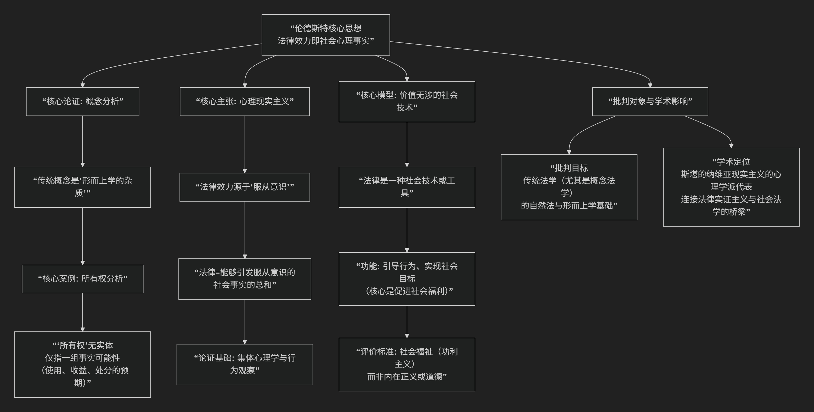

Vilhelm Lundstedt
基于维尔赫姆·伦德斯特德（Vilhelm Lundstedt, 1882–1955）现实主义法哲学核心思想
维尔赫姆·伦德斯特是 斯堪的纳维亚现实主义法学最具心理学倾向的代表人物，他的核心思想可概括为：法律本质上是一种社会心理事实，其效力完全取决于社会成员（尤其是公民）内心普遍的“服从意识”与“有效感”。他的理论旨在将法律彻底 心理学化，从而消解传统法学中的超验规范概念。
其核心思想体系，可以通过下图清晰地概览：

以下，我们将沿此逻辑脉络，深入解析其核心要义。
—
一、核心论证：对传统法律概念的心理学解构
伦德斯特继承并发展了海耶斯特勒姆的批判路径，认为“权利”、“义务”、“有效性”等概念并无实在对应物，是 “形而上学的杂质”。他以“所有权”为例进行了经典分析：
传统观点 认为“所有权”是一种人对物的 绝对支配关系。
伦德斯特的分析：“所有权”这个词并不指代任何实体或神秘纽带。它仅仅是人们对 未来一系列事实可能性（预测）的简化表述。例如，说“我拥有一本书”，实质意义是：我可以预测（并且社会也如此预期）我能阅读它、出售它、或阻止他人拿走它，并且如果这些预期落空，国家机器可能会介入。
结论：法律概念只是 用来描述和预测社会行为及反应的便利标签，其背后是复杂的心理预期和社会事实网络。
二、核心主张：法律效力即“服从意识”
这是伦德斯特最具原创性的贡献。他提出了一个关于法律效力的纯粹心理学解释：
效力的心理基础：法律的“约束力”或“有效性”并非来自某种抽象的规范属性（如凯尔森的“基础规范”），而是来自社会成员内心 普遍存在的“服从意识”或“有效感”。
法律的定义：因此，法律可以被定义为 “能够引发或维持社会成员这种服从意识的社会事实的总和”。这些事实包括国家的强制手段、法官的行为模式，但最重要的是 公民普遍相信法律应当被遵守的心理状态。
同构类比：他常用“货币”作类比。一张纸之所以是货币，不是因为它本身的价值，而是因为人们普遍相信它能用来交换商品和服务。同理，法律规则之所以有效，是因为人们普遍相信它们应当被服从。这种集体心理信念才是法律效力的真正源泉。
三、核心模型：作为“社会技术”的法律
在剥离了法律的规范性外衣后，伦德斯特将其重塑为一种 “社会技术” 或 “社会工程”工具：
工具性：法律不是目的本身，而是 实现社会所欲目标（特别是社会福利）的手段。它是一套引导和调控人类行为的技术系统。
价值无涉的分析：法学家研究法律时，应像工程师研究机器一样，描述其实际运作机制和因果效应，而不是进行道德评判。法学应成为一门关于法律行为及其社会效果的 经验科学。
评价标准：虽然法学研究本身是价值中立的，但立法和政策制定则应基于 “社会福利” 这一功利主义标准。法律的好坏取决于其能否有效地促进社会的整体福祉。
四、与海耶斯特勒姆的关联及特点
维度 |
海耶斯特勒姆 |
伦德斯特 |
|---|---|---|
核心批判 |
侧重于揭露法律概念的 形而上学本质，称其为“幻想财产”。 |
侧重于分析法律概念背后的 社会心理事实与行为预测。 |
理论重心 |
哲学与概念分析，更具破坏性和解构性。 |
心理学与社会学转向，更具建设性，试图建立新的科学法学基础。 |
方法偏好 |
逻辑分析与历史溯源。 |
心理分析与行为观察（更接近美国现实主义）。 |
共同目标 |
彻底清除法学中的超验要素，建立基于经验的现实主义法学。 |
五、总结与评价
伦德斯特的现实主义是 将法律彻底“去神秘化”和“科学化”的激进尝试。他将法律从“规范的世界”拉入“事实的世界”，强调其作为 社会控制与行为引导技术 的本质。
贡献：
为理解法律效力提供了 纯粹社会心理学的解释模型，影响深远。
推动了法学研究向 经验科学和行为科学 靠拢。
其工具主义法律观促进了法律政策与社会工程相结合的研究。
批评：
化约主义风险：将法律完全化约为心理事实和社会效果，可能忽略了法律作为一种 独特的规范性实践 （提供行动理由而不仅仅是行为原因）的特性。
“服从意识”的循环论证：法律的效力源于服从意识，但服从意识又常是因为“那是法律”而产生。这种解释有循环之嫌。
价值与事实的割裂：坚持法学研究应完全价值无涉，但在提倡以“社会福利”为立法标准时，又不可避免地引入了价值判断。
总而言之，伦德斯特将斯堪的纳维亚现实主义从海耶斯特勒姆的哲学批判，推向了一个更具实证主义和社会科学倾向的领域。他的工作提醒我们，法律的力量最终根植于人们的集体意识与社会实践之中，而非任何飘渺的理念天国。 他的思想是连接欧洲概念法学与美国法律现实主义、以及后来的法律社会学的重要桥梁。